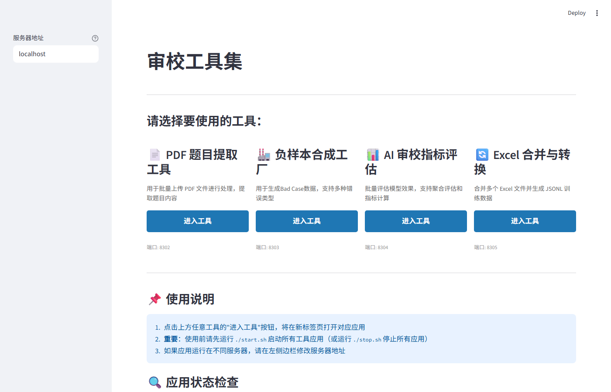
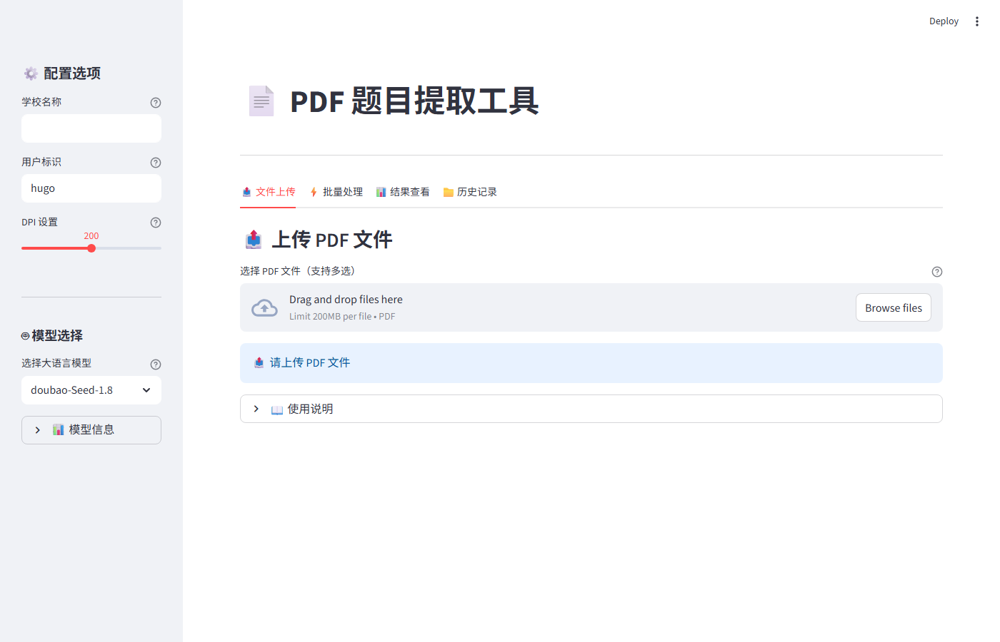
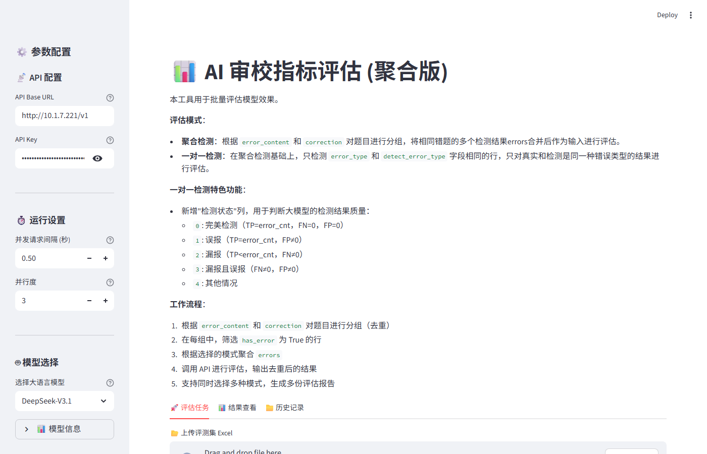
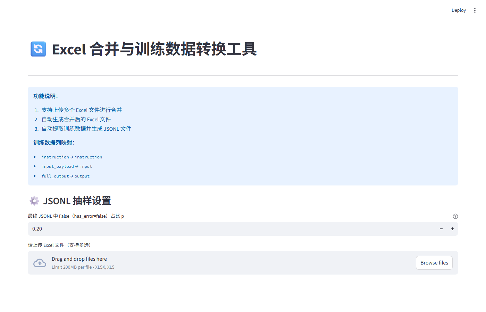

🧰 审校辅助工具集
checker_tools — 覆盖数据摄取→坏例生成→模型评测→训练集导出全链路的 4 合 1 Streamlit 工具箱
项目概览
本项目是配套 exam_smart_checker / exam_checker_agent 的数据工程工具集，
将数据管道中最常用的 4 个独立操作封装为可独立访问的 Streamlit Web 工具，
通过统一启动器一键拉起，也支持 Docker Compose 容器化部署。
应用场景：AI 审校系统的数据准备、质量评估、训练集构建全流程支持
4 个子工具
📄 pdf2text
端口 8302
从 PDF 试卷中提取题目文本，支持多栏版面与图文混排，输出结构化 JSON/JSONL。
🔬 process_badcase
端口 8303
负样本/坏例工厂：对审校结果中的错误案例进行整理、分类、标注，生成可用于模型微调的对齐数据。
📊 evaluation
端口 8304
AI 审校结果评测工具：计算精确率、召回率、F1 等指标，支持人工标注对比与批量评估报告。
📋 excel_merger
端口 8305
Excel 合并 → JSONL 训练数据导出：将多份 Excel 标注结果合并、去重、格式转换为下游训练框架可用的 JSONL 格式。
技术栈
架构与部署
checker_tools/
├── main.py # Streamlit 导航首页 (hub launcher)
├── pdf2text/ # 子工具 1：PDF 解析 → port 8302
├── process_badcase/ # 子工具 2：坏例工厂 → port 8303
├── evaluation/ # 子工具 3：模型评测 → port 8304
├── excel_merger/ # 子工具 4：Excel→JSONL → port 8305
├── start_all.ps1 # Windows 一键启动
├── start.sh # Linux/Mac 一键启动
└── docker-compose.yml # 容器化部署
核心设计
全链路数据管道覆盖
4 个工具覆盖了 AI 审校系统数据工程的完整链路： PDF 解析（数据摄取）→ 坏例生成（负样本构建）→ 模型评测（质量验证）→ JSONL 导出（训练集交付）。
统一 Hub 启动器
main.py 作为导航首页，一键进入任意子工具；
start_all.ps1 / start.sh 并行启动全部 4 个服务，
docker-compose.yml 支持一键容器化。
创新点 / 我做了什么
- 设计并实现 4 个独立 Streamlit 工具，覆盖数据工程全链路
- 构建统一 Hub 启动器与端口分配方案
- 编写 Docker Compose 配置，支持生产环境容器化一键部署
- 实现 Excel → JSONL 批量转换，兼容主流训练框架输入格式
- 实现 LLM-as-Judge 评测框架，自动化计算审校质量指标
效果截图

工具集导航首页 — 4 个子工具一览

pdf2text — PDF 题目批量提取工具

evaluation — AI 审校指标评估工具

excel_merger — Excel 合并与 JSONL 训练数据导出